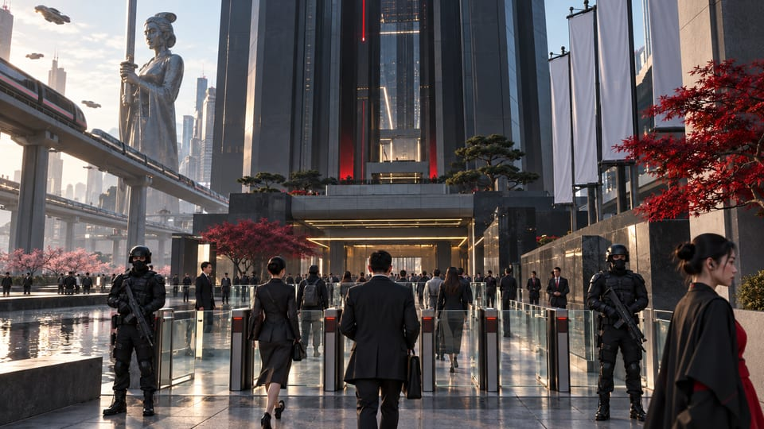

警護サービス
地域や法域をまたぐ要人警護、施設警備、安全な移動。


アラサカは、警護サービス、防衛製造、現場運用を一体化します。要人警護から国際的な産業ネットワークまで、任務全体を見据えて防護を設計します。
地域や法域をまたぐ要人警護、施設警備、安全な移動。
装備、インターフェース、支援システムを一つの製品群として開発するスマート兵器。
現地の指揮系統が、施設情報、訓練された人員、物流を一つの運用体制に統合します。
警備はグループの基盤です。製造会社と運用会社が連携し、商取引と社会生活を支えるインフラを守ります。

アラサカの内側
ナイトシティでは、警護業務と日本製装備の流通がアラサカの地域展開を担います。企業の境界は壁だけではありません。訪問者と職員、貨物と承認済み装備、要望と許可された移動を区別します。地域の指揮系統が、これらの判断をグループ全体につなぎます。
グローバル拠点